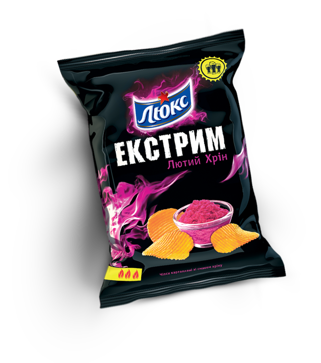
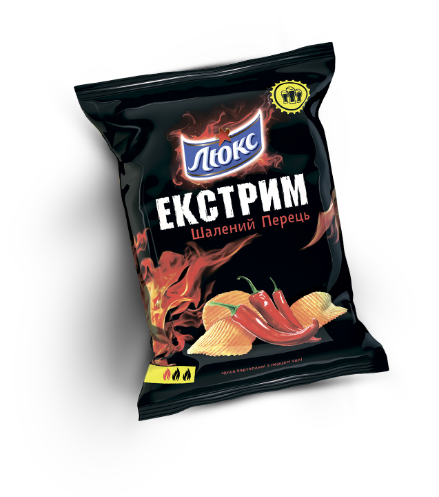
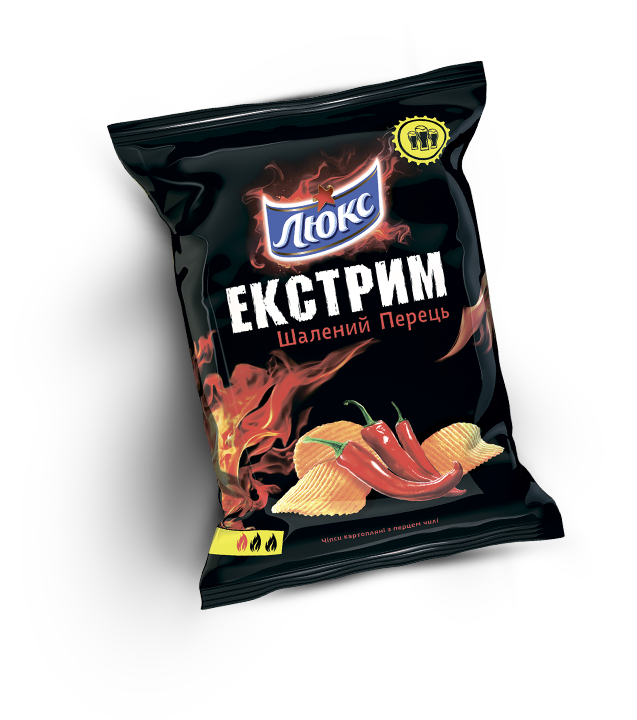
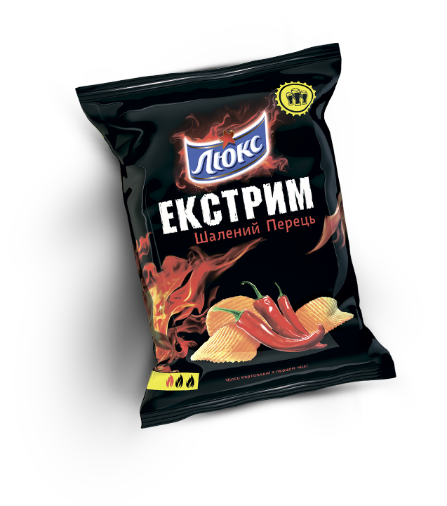

 


Лютий хрiн
Можете сприймати це як виклик, адже ці чіпси для найвідчайдушніших екстремалів! Відкривайте пачку Люкс Екстрим Лютий Хрін тільки в тому випадку, коли перевірили свої сили на двох інших смаках Люкс Екстрим. У разі появи сліз негайно зверніться до охолоджуючих напоїв!
Дика гiрчиця
Чіпси Люкс Екстрим Дика Гірчиця такі гострі, що мексиканці додають їх у страви замість пекучого перцю. Не кожен зважиться на цей смак, а от справжні екстремали оцінять!
Шалений перець
Скучили за гострими враженнями? ЛЮКС Екстрим приготував для вашого язика справжній феєрверк відчуттів: відбірна українська картопля та пекучий червоний перець створюють справді вибуховий мікс!
Вага пачок: 80г, 140г
Усi чiпси